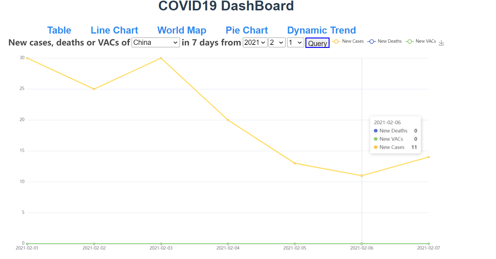
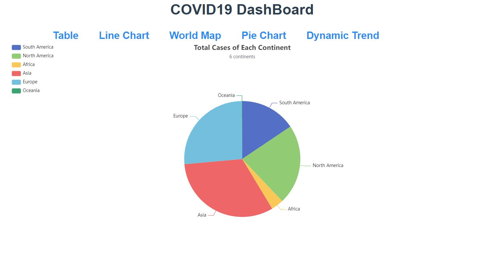
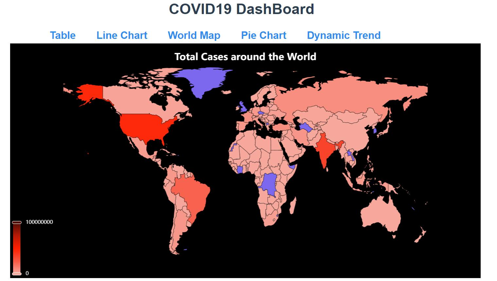

CS209 Project Report
COVID19_DashBoard
11911109 张倚凡, 11910216 王标, 11911627 谈思序
Ⅰ. Brief introduction
In this project, we built a simple but useful covid19 data visulization web-app, which contains both frontend and backend. Components and techniques utilized are as follows:
- Frontend: Vue, webpack
- Backend: Springboot
- Database: PostgreSQL
- Data source: https://www.worldometers.info/coronavirus/ (Daily update), owid-covid-data.csv(Historcal data)
- Data process: Java
This DashBoard contains the following attributes for each country on each day:
- Total infected cases
- New infected cases
- Total deaths
- New deaths
- Total vaccinated
- New vaccinated
This DashBoard currently has the following functions:
- Efficient data strcture to process the data and reliable data storage.
- Data table-view display.
- Support 4 methods of visulization, including world map, line charts, dynamic charts, pie charts. With the well-designed backend and frontend, the visulization methods is scalable, which means user can cumstomize the charts with ease.
- Automatically track the latest covid19 data using web crawler.
- Support search and sort functions to display table-view.
- Support data export to json and image export.
- Flexible parameters can be set to display the data.
- Support animation visulization.
File structure
Main file structure is shown as follows.
├─COVID19
│ │ .babelrc
│ │ .editorconfig
│ │ .gitignore
│ │ .postcssrc.js
│ │ dashboard.css
│ │ index.html
│ │ package-lock.json
│ │ package.json
│ │ README.md
│ │ vue.config.js
└─Springproject
├─src
│ ├─main
│ │ ├─java
│ │ │ │ owid-covid-data.csv
│ │ │ │
│ │ │ ├─com
│ │ │ │ └─example
│ │ │ │ └─demo
│ │ │ │ │ SpringprojectApplication.java
│ │ │ │ │
│ │ │ │ ├─config
│ │ │ │ │ CorsConfig.java
│ │ │ │ │
│ │ │ │ ├─controller
│ │ │ │ ├─entity
│ │ │ │ └─web
│ │ │ │ dataProess.java
│ │ │ │ HelloTest.java
│ │ │ │
│ │ │ ├─config
│ │ │ │ Config.java
│ │ │ │
│ │ │ ├─data
│ │ │ │ Continent.java
│ │ │ │ Country.java
│ │ │ │ CountryCase.java
│ │ │ │ CountryData.java
│ │ │ │ DataReadEncapsulation.java
│ │ │ │ DataToJson.java
│ │ │ │ DataUtil.java
│ │ │ │ DynamicData.java
│ │ │ │ InfoPiece.java
│ │ │ │
│ │ │ └─database
│ │ │ Crawler.java
│ │ │ DatabaseAccess.java
│ │ │ SQLDataSource.java
│ │ │
│ │ └─resources
│ │ │ application.properties
│ │ │ config.properties
│ │ │
│ │ ├─static
│ │ └─templates
│ └─test
│ └─java
│ └─com
│ └─example
│ └─demo
│ SpringprojectApplicationTests.java
Ⅱ Class Methods and Fields
Data structure
-
continent
String name; long value;
pie charts need continent dataType to express the total cases of every continent.
-
Country
private String CountryCode; private String CountryName; private String Continent; public ArrayList<InfoPiece> infoList; private int total_cases; private int total_deaths; private int total_Vacs;
Country dataTpye is to store all infoPieces of this country and relevant information.
-
countryCase
String name; Long value; String Continent;
Map chart needs countryCase dataType to represent the total cases of every country.
-
countryData
ArrayList<String> date; ArrayList<Long> newDeaths; ArrayList<Long> newVACs; ArrayList<Long> newCases;
Line chart needs countryData dataTpye to express from the data on, in the next six day, what newDeaths, newVACs, newCases are.
-
dynamicData
String date; String country; long cases;
dynamic chart needs dynamicData to express the total cases of the country in this date.
-
InfoPiece
public String CountryCode; public String CountryName; public String Continent; public Date date; public Long newCases; public Long totCases; public Long newDeaths; public Long totDeaths; public Long newVACs; public Long totVACs;
InfoPiece dataTpye is to represent every line of the crawler data.
Data process
The whole process is as follows.
-
accept request from the webpage
dataProcess
@GetMapping("/continent") public String continent(){} @GetMapping("/country") public String country(@RequestParam String countryName,String date) throws ParseException {} @GetMapping("/map") public String map(){} @GetMapping("/dynamic") public String dynamic(){} @GetMapping("/table") public String table(@RequestParam String date, String group, String order) throws ParseException, NoSuchFieldException {}
-
select the corresponding data according to the passed parameters.
DataUtil
public static String mapChartData(ArrayList<InfoPiece> records){} public static String animaData(ArrayList<InfoPiece> records){} public static String pieChartData(ArrayList<InfoPiece> records){} public static String tableData(ArrayList<InfoPiece> records, String group, String order, Date date) throws NoSuchFieldException {} public static String tableData(ArrayList<InfoPiece> records, String group, String order, Date date) throws NoSuchFieldException {
-
encapsulate the data and return it to the request as Json
DataToJson
public static String tableData(ArrayList<InfoPiece> records, String group, String order, Date date) throws NoSuchFieldException {} public static String countryDataGet(Country country, Date date) throws ParseException {} public static String dynamicDataGet(ArrayList<InfoPiece> records) {} public static String mapDataGet(CountryCase[] country_cases) {} public static String tableDataGet(ArrayList<InfoPiece> records) {}
Database
DatabaseAccess
This methods are used to insert data into database and retrieve data, as their name indicate.
public static void insertPiece(InfoPiece piece){} public static ArrayList<InfoPiece> getRecords(PreparedStatement pstm){} public static ArrayList<InfoPiece> getAllRecords(){}
Ⅲ. Demonstration
Table-view with search and sort function

As shown, search and sort can be invoked using the floating selector on the right side.
Line-chart

Line charts shows the new cases, deaths or VAcs of a selected Country in the last 7 days from ceitain day.
Pie-chart

Pie charts presents the COVID19 situation among all continents.
World Map

Map shows total cases of a certain country all around the world.
Trend Animation

This dynamic animation figure shows the total cases of 10 countries.
Realtime database

With web crawler, the most up-to-date data can be retrieved. This figure presents part of data scraped from the internet.
Ⅳ Acknowledgement
Thanks all the team members, they stayed up late for a whole weekend to finish this fancy project.
Thanks Meeting room 804B in College of Engineering, where we combated the codes.